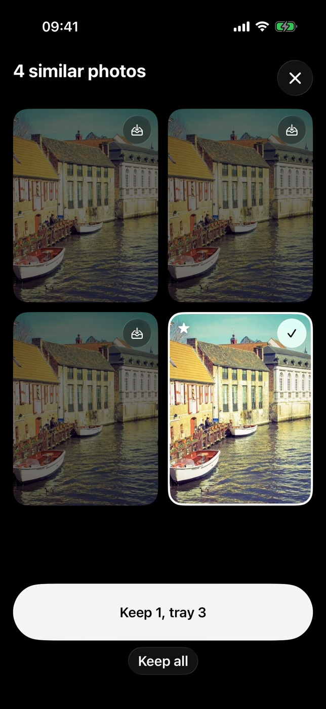

How to delete duplicate and similar photos on iPhone
There are two kinds of doubles in a camera roll. Copies of the same photo, and shots that are almost the same, like a burst or three tries at one moment. Photos handles the first kind for you. The second kind needs a choice.
This guide is for iPhone owners who want fewer copies and near-copies in their camera roll. It covers the Photos app and Kept on iPhone, not Mac or other phones.
Short answer. Open Photos, tap Collections, then Utilities, then Duplicates, and tap Merge on each set. For similar shots that aren't duplicates, compare them side by side, keep the best one and delete the rest. Deleted photos go to Recently Deleted, where they are usually recoverable for up to 30 days.
1. Merge duplicates with Photos
Photos collects the photos and videos it sees as duplicates in its own collection. Apple's steps, from the iPhone User Guide:
- Open the Photos app.
- Tap Collections.
- Tap Utilities, then Duplicates.
- Tap Merge on a set, then Merge [number] Items.
If the Duplicates collection isn't there, Photos hasn't found any duplicates in your library.
2. Pick the best of similar shots
Bursts, retakes and a few seconds of the same scene differ a little from shot to shot, so Photos may not count them as duplicates. Here you have to decide which one to keep. In Photos you can do that by hand: open the photos one after the other, favourite the one you like, and delete the others.
It goes faster when the similar photos sit next to each other. That's the part Kept does.
3. With Kept, side by side and nothing deleted yet
Kept looks through your whole library on your iPhone and groups look-alikes: bursts, retakes and duplicates. Open a group and you see every shot at once. Kept stars the one it suggests as the best shot. You choose what to keep, and the rest go to a tray.

The star is a suggestion based on sharpness, exposure and Apple's own photo quality score, so look before you agree. Nothing is deleted while you choose. When you're sure, open the tray and confirm once, and iOS asks you again. Before a look-alike is removed, Keeper Check makes sure the photo you kept instead is still there.
Kept is free for your first 500 deleted photos, then $5.99 once. Everything runs on your iPhone, with no account and no upload.
Download Kept on the App StoreWhat I learned building the look-alike part
I tested Kept on my own camera roll, 14,747 photos. Three things were harder than they look.
- Groups that chain. The first version put A and C in one group because A looked like B and B looked like C, so very different photos ended up together. Now every pair in a group has to be alike on its own, and the closest pairs join first.
- Where "similar" stops. I marked pairs of my own photos as "same moment" or "different" and set the cut-off from those marks. A slider in Kept's Settings moves it if you want stricter or looser groups.
- Hidden burst frames. iOS shows a burst as one photo. Kept has to ask for every frame on purpose, otherwise the extra frames are invisible and a clean-up quietly skips them.
In short
Use Merge in Photos for duplicates. For bursts and retakes, put them side by side, keep the best one and let the rest go, either by hand or with Kept. Whatever you delete waits in Recently Deleted for 30 days.
Questions
Can I get a deleted photo back?
Usually, yes. Photos you delete go to Recently Deleted in Photos (Collections, Utilities). Apple's iCloud Photos page says you can recover them there for 30 days, and after that they are deleted permanently.
Does deleting free up iCloud storage?
If iCloud Photos is on, yes. Apple puts it plainly: when you delete photos on one device, "they're deleted everywhere that you use iCloud Photos" (Apple's iCloud Photos page). If iCloud Photos is off, deleting only frees space on the iPhone itself.
Is Merge the same as deleting?
Merge combines a set of duplicates in Photos into one. It's Apple's tool for copies. For similar shots that aren't copies, you choose which to keep yourself, by hand or with an app like Kept.